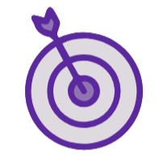
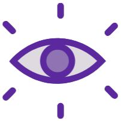

Sobre o Projeto
O projeto Guardiãs das Águas visa promover uma educação de qualidade
para meninas com enfoque no despertar do interesse para questões relacionadas
à Engenharia Ambiental, especially na qualidade das águas doces e saneamento básico.
Buscamos inserir meninas e mulheres (do ensino fundamental, médio e graduação)
no meio científico através do desenvolvimento de pesquisas que estimulem conhecimentos
em química, física, hidrologia, análise de dados, ecotoxicologia e tecnologia Ambiental
para redução da poluição.
Nossa missão é empoderar mulheres na ciência, supercar barreiras de gênero e estimular
a participação activa nas comunidades locais para a divulgação científica e o diálogo
sobre saneamento básico e proteção das águas.

Objetivos
Fortalecer grupos locais de pesquisa em saneamento ambiental.
Estimular o interesse de meninas pelas áreas de Exatas, Engenharias e Computação.
Formar agentes multiplicadoras nas comunidades.

Conheça nossa missão, visão e valores que guiam nosso trabalho
Missão

Incentivar meninas e mulheres na ciência e na educação ambiental.
Visão

Formar lideranças femininas para um futuro mais sustentável.
Valores
Acreditamos na ciência, na educação ambiental e no protagonismo feminino.

Drª. Jeamylle Nilin
Idealizadora dos projetos Guardiãs do Mar e Guardiãs das Águas.
Coordenadora geral e responsável pela articulação das equipes.
Bióloga com Doutorado em Ciências Marinhas Tropicais. Desenvolve atividades de ensino e pesquisa e extensão em educação ambiental e popularização da ciência nas áreas de Ecotoxicologia e Resíduos Sólidos.
UFU - Biologia | Uberlândia - MG

Dra. Claudiene Santos
Coordenação Direitos Humanos
Biologia com Doutorado em Psicologia. Especialista em Educação Sexual. Coordenação geral das atividades relacionadas às questões de gênero, juventude, sexualidades, diversidade sexual, saúde, violências de gênero e educação sexual.
UFU - Pedagogia | Uberlândia - MG
Nome da coordenadora
Coordenação Local
INSTITUIÇÃO - Formação
Agudos do Sul - PR
Nome da coordenadora
Coordenação Local
INSTITUIÇÃO - Formação
Coari - AM
Nome da coordenadora
Coordenação Local
INSTITUIÇÃO - Formação
Cuiabá - MT
Dra. Janisi Sales Aragão
Coordenação Local
IFCE - Eng. Ambiental
Juazeiro do Norte - CE
Nome da coordenadora
Coordenação Local
INSTITUIÇÃO - Formação
Manaus - AM
Dr. Paulo Sérgio de Carvalho
Coordenação Local
UFPE - Zoologia
Recife - PE
Conheça os nomes que apoiam este projeto!
Instituições de Ensino:


Órgãos Institucionais:


Faça parte você também!
Se você deseja saber mais sobre o projeto Guardiãs das Águas e como participar, visite nossa página de inscrição para mais informações.
Não é necessário experiência, apenas vontade de transformar o mundo!